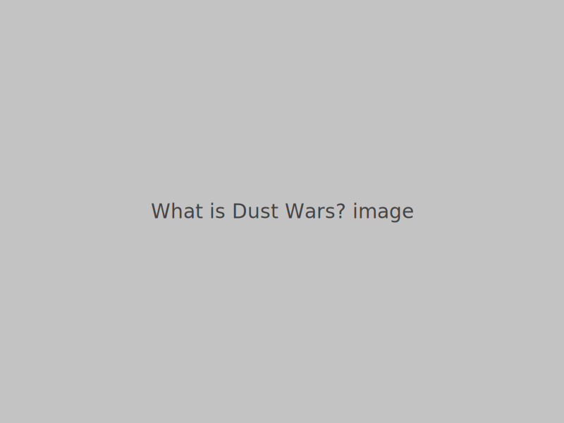
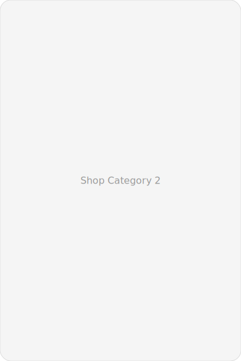
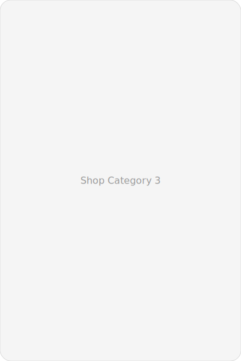

What is Dust Wars?
Dust Wars is a card game that can be played by two players or more. There are different Dust creatures that players can choose from and they come with their own deck of playing cards with different abilities that you’ll use to battle the other players. Players start out with 15 health points or HP that can be tracked using a health point tracker card and creature tokens. Then players take turns attacking other players or using the abilities shown on their cards. You’ll win the Dust War by being the last Dust Creature standing.
Who is the creator?
Nate is an independent game designer and illustrator who enjoys crafting small but deep card games. Nate focuses on approachable mechanics, strong visual identity, and tabletop moments that create stories among players.
How it all started?
Hi,
Thank you for checking out Dust Wars, a game made by a kid, for kids and non-kids!
Dust Wars started when I cut up a plushie toy so I can get the cotton fill inside (that got me in big trouble with my nanay). Using hot glue, I shaped and turned the cotton fill into “dust creatures” that battled in a war. That inspired me to make the combat card game you now know as Dust Wars. The very first creature I drew was Dust Bunny. I cut-up cardboard & drew Dust Bunny’s different abilities. I played my hand-made cards with my classmates and cousins. I was 9 years old that time.
My parents said I should digitize my drawings. In 2024, I borrowed Nanay’s iPad and taught myself how to use Procreate. In May 2024 at 10 years old, I finished making all the Dust Animals in the Basic Pack.
After that, we looked for suppliers to bring the card game to life. That was the longest process and we thought we would never be able to launch. But we powered through and here we are now.
So the card game you now have is the result of creativity, inspiration, hardwork and never giving up. That’s why I am super grateful for your support for a kid like me! With your help, I hope more kids and non-kids get to enjoy Dust Wars. Thanks and enjoy!
Shop Categories


How to play?
Abilities
ATTACK
Deals damage to an opponent/s of your choice. The number of ATTACK icons corresponds to the amount of HP lost by your opponent. Damage may be distributed among opponents as you choose.
HEAL
Recovers your health points (HP). The number of HEAL icons corresponds to the amount of HP recovered. Maximum HP is 15.
HIDE
Hides you from attack damage for that turn — keep the card face-up in front of you. The HIDE effect ends on your next turn, when you move the card to your discard pile.
ENERGY
Lets you play additional card(s) this turn. The number of ENERGY icons equals the number of extra cards you may play.
ADD
Draw extra card(s). The number of ADD icons equals the number of extra cards you may draw. Maximum hand size is 8 — if you already have 8 cards you forfeit extra draws.
FINAL FORM
When your HP drops to 5, you enter FINAL FORM and may add your Final Form card to your deck. If you have 8 cards in hand when entering Final Form, you may discard any card to add the Final Form card. Final Form cards can be played alone or with another card (they include at least one ENERGY icon). When played with another card, Final Form enhances the ability shown with the green arrow on the Final Form card (e.g., adds +1 HEAL icon). If the other card does not have the matching ability, there is no enhancement. You may play the Final Form card alone only once per game, but the enhancement effect remains as long as you are in Final Form (the Final Form card does not go to the discard pile while you remain in Final Form). If your HP recovers to 8 or higher you revert to regular form until your HP falls to 5 or lower again.
Assemble your character token
Each box includes an extra flap with a character print. Detach the flap and cut out the character tokens in circular form. For a thicker token, glue two circles together.
Game Modes
Free-for-all Mode
- Choose a Dust Animal deck, character token and health point tracker card (tip: each character has certain focused abilities). Everyone starts with 15 health points, so move your character tokens on your tracker card to track damage and heals to your health points.
- From your Dust Animal deck, look for the Final Form card and place it front of you face up. This can be used later, when your health is down to 5HP or lower.
- Shuffle your deck and ask the player to your right to cut your deck. This is your draw deck. Each player will draw three cards as a starting hand.
- Pick a player to go first (no rules here!) and take turns going clockwise.
- Each player starts their turn by drawing one card from their draw deck. You can choose to play a card, or none.
- Cards played during a turn will go to the discard deck, but cards with HIDE abilities will only be discarded when that ability is lost at the next turn.
- If you are done, knock on the table to signal the end of your turn.
- If you run out of cards, shuffle the discard deck and ask the player to your right to cut your discard deck. This is now your new draw deck.
- You can only have a maximum of 8 cards in your hand.
- You can play all your cards in one turn, but you will need to wait for your next turn to draw a card.
- Deal damage to your opponents using ATTACK cards, while defending against their attacks using HIDE and HEAL cards. Tactically-leverage the ADD, ENERGY and FINAL FORM cards to outwit your opponents. Lose all your health points and that means you’ve been ooof-ed. The last Dust creature with health points remaining wins the DUST WAR.
Co-op Mode
- Co-op Mode is similar to Free-for-all Mode, except players will team up and strategize to take down another team. Teams are allowed to see their teammate's cards and strategize on their attack (like gang up on one player, coordinate their attack and health, use combos, etc.).
- In Co-op Mode, instead of drawing three cards, each player will draw only one card as a starting hand.
- The first team to lose all its players is eliminated.
How to order?
Pre-orders and small-batch prints are available through our online store. If you want to order directly, contact us via email or follow the social links below.
Order NowTestimonials
"Amazing design and quick matches. My go-to game for game night." — Ana, Manila
"Beautiful art and tight mechanics. Highly recommended." — Marco, Cebu